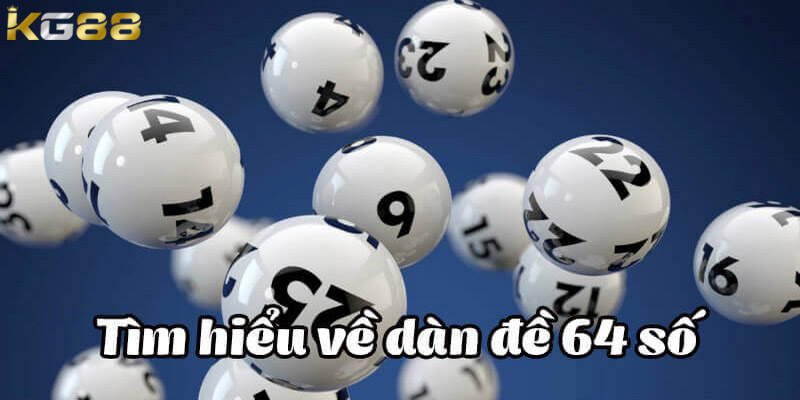

XỔ SỐ KG88
Hướng Dẫn Cách Lên Dàn Đề 64 Số Hiệu Quả Thắng Lớn
POSTED ON THÁNG SÁU 17, 2024 BY ADMINKG88

Dàn đề 64 số được biết đến là phương pháp đánh 2 số cuối trong giải đặc biệt rất phổ biến. Nhiều người chơi tham gia đã nhận được về phần thưởng lớn khi áp dụng phương thức này. Cùng KG88 tìm hiểu chi tiết cách lên dàn đề hiệu quả để thắng lớn nhé.
Tìm hiểu định nghĩa về dàn đề 64 số là gì?
Dàn đề 64 số hiểu theo một cách đơn giản nhất đó chính là việc anh em lựa chọn ra 64 con số ngẫu nhiên, sau đó dùng chúng để đánh trong cùng một ngày, có thể là hôm nay hoặc các ngày sau đó. Tỷ lệ thắng của hình thức này so với song thủ hay bạch thủ sẽ có phần cao hơn.
Chính vì thế đã nhận được sự quan tâm và trở thành lựa chọn của nhiều bet thủ, không những thế nếu là tân binh thì phương pháp này cũng rất phù hợp. Tuy nhiên để đạt được hiệu quả cao nhất thì anh em phải nắm được cách soi cầu lập dàn đề luôn thắng chuẩn cũng như hiểu rõ ưu và nhược điểm để đưa ra những quyết định đúng đắn. Đồng thời chuẩn bị nguồn vốn hợp lý để tham gia một cách hiệu quả hơn.

Dàn đề 64 số chính là việc anh em lựa chọn ra 64 con số ngẫu
nhiên
Các cách lên dàn đề 64 số bất tử và hiệu quả
Việc tìm ra 64 con số này nếu chỉ lựa chọn ngẫu nhiên thì cơ hội chiến thắng là rất thấp. Vậy nên anh em cần áp dụng những phương thức soi cầu để tìm ra được những con số có tỷ lệ thắng cao nhất. Dưới đây là một số cách lên dàn đề bất bại được giới chuyên gia xổ số KG88 đánh giá có hiệu quả tốt mà anh em không nên bỏ lỡ.
Sử dụng cách lên dàn đề phương pháp thống kê
Để lên được dàn đề theo phương pháp thống kê này thì mọi người phải tổng hợp lại các con số trong bảng kết quả xổ số đã về và ít nhất trong 30 ngày gần nhất. Từ kết quả trên anh em chọn ra 8 số đầu kết hợp với 8 số cuối để tạo nên một dàn đề bất bại.
Lên dàn đề 64 con số theo kết quả giải đặc biệt
Muốn tạo ra dàn đề 64 số nhanh và hiệu quả nhất thì mọi người cần nghiên cứu kết quả trước đó để tìm ra tính quy luật. Nếu như anh em không đủ vốn thời gian để thống kê giải đặc biệt lâu dài thì có thể dựa vào giải gần nhất. Ví dụ như đó đều là số chẵn về trong thời gian gần đây thì anh sẽ lập dàn đề 64 số theo giải đặc biệt này.
Theo phương pháp này anh em sẽ có cơ hội thắng rất cao, các con số trong dàn đề này được sắp xếp theo quy luật hay là tự nhiên dựa vào sự tính toán của mỗi người chơi,chỉ cần anh em áp dụng chiến thuật hiệu quả và quản lý nguồn vốn một cách cẩn thận. Nếu chưa chắc chắn về những con số thì đừng nên mạo hiểm để tránh đi những rủi ro không đáng có.
Cách đánh dàn đề 64 con số dựa vào lô gan
Cách đánh dàn đề 64 số dựa vào lô gan được nhiều cược thủ áp dụng vì dễ chơi mà còn đem lại hiệu quả cao. Với chiến thuật này mọi người dựa vào những con số lô gan chưa về trong khoảng thời gian dài. Các con số lô gan có thể sắp xếp theo chẵn lẻ, lẻ chẵn hoặc theo cách nào mà người chơi muốn, hãy lưu ý chọn những số mà anh em cảm thấy có khả năng về cao nhất.
Dàn đề 64 con số dựa vào lô gan được nhiều cược thủ áp dụng vì
có tỷ lệ thắng lớn
Đánh dàn đề đầu câm đuôi câm
Chiến thuật này cũng rất phổ biến và được lòng nhiều bet thủ, có thể hiểu đơn giả nếu như anh em chọn câm đầu 2 thì các con số đều phải có số 2 đứng đầu rồi mới đến số khác. Ví dụ 22, 24, 26… với câm đuôi thì cũng tương tự như vậy.
Mọi người có thể ứng dụng linh hoạt những cách khác nhau để tạo ra một dàn đề bất bại chỉ cần đảm bảo là nó sẽ đạt hiệu quả cao nhất và mang lại số tiền thưởng khủng cho anh em.
Kinh nghiệm cần nhớ để đánh dàn đề 64 số hiệu quả nhất
Để đạt được nhiều thắng lớn khi chơi dàn đề 64 con số, anh em nên ghi nhớ một số kinh nghiệm như sau:
-
Để đạt được nhiều thắng lớn khi chơi dàn đề 64 con số, anh em nên
ghi nhớ một số kinh nghiệm như sau:
- Để đạt được hiệu quả cao nhất khi chơi theo phương pháp này thì theo kinh nghiệm của các chuyên gia cho rằng anh em phải tính toán hợp lý nhằm đưa ra được một dàn đề 64 số bất tử. Đây là cơ sở, nền tảng giúp người chơi có thể thu về khoảng tiền thưởng khổng lồ.
- Hãy chuẩn bị một nguồn vốn đủ tốt để nuôi được dàn đề đã lên, đảm bảo có thể theo đến khi nhận được kết quả.
- Cuối cùng là anh em phải luôn giữ một tâm lý ổn định, vững vàng để đưa ra được những quyết định đúng đắn nhất. Hãy nên biết điểm dừng để, không nên quá ham để tránh được rủi ro mất quá nhiều vốn.
Kinh nghiệm khi đánh dàn đề 64 con số thật hiệu quả
Bài viết trên đã được KG88 tổng hợp và gửi đến bạn đọc cách thức lên dàn đề 64 số đánh quanh năm hiệu quả và đảm bảo thắng lớn. Hy vọng anh em sẽ áp dụng thành công vào quá trình chơi lô đề và kiếm được phần thưởng khủng.
Xem thêm: Hướng Dẫn Cách Đánh Lô Xiên Hiệu Quả Hốt Bạc Đầy Túi
BÀI VIẾT MỚI